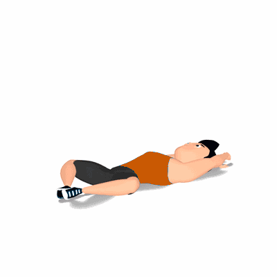

Abdominal Butterfly

Exercício para fortalecimento e hipertrofia da região abdominal, reto abdominal.
Ficha Técnica
Tipo: Funcional
Grupo Muscular: Abdome
Aparelho: Nenhum
Músculos: Nenhum
Como realizar
- Deite sobre um colchonete;
- Posicione a planta dos pés, uma em direção a outra, próximo a virilha;
- Joelhos apontados para fora, posicione as mãos sobre a cabeça, está é posição inicial do exercício;
- Realize a flexão do tronco, aproximando o peitoral aos joelhos, concentre todo o esforço nos músculos do abdome;
- Utilize os braços para auxiliar no impulso;
- Realize os movimentos pelo o número de repetições orientado pelo professor(a).
 RC STORE
RC STORE